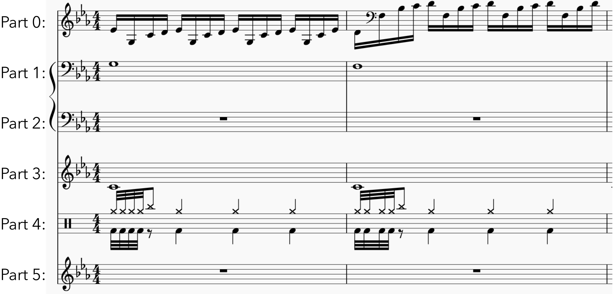

Select parts/staves (separated with commas) to get features from (leave empty for entire score):
Example: if you only want to extract features from parts 0, 1 and 5 type "0, 1, 5" (without quotes) in the parts selection area.
Hint: if you want to start counting from the end, e.g. to take features from the last two staves of each input score, use negative numbers: -1 is the is the last part, -2 the penultimate etc.
Example of part/staff numbering:
